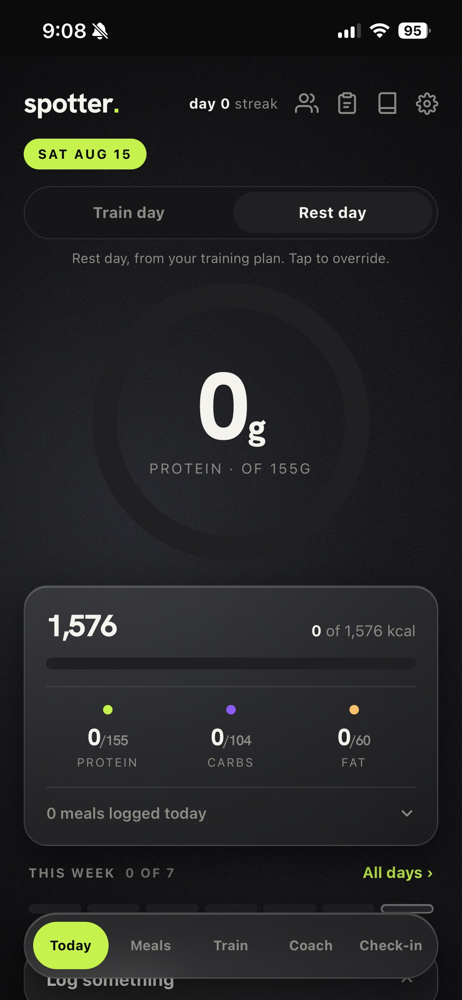
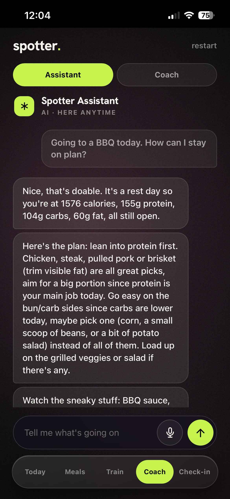
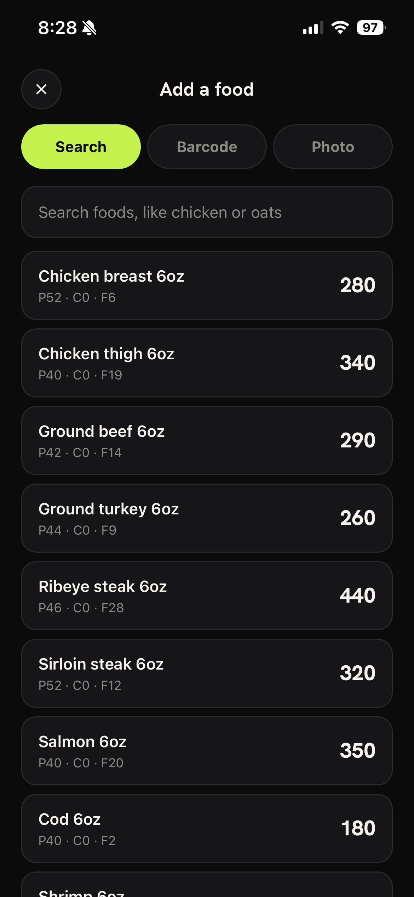
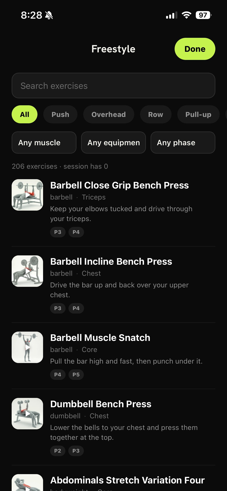
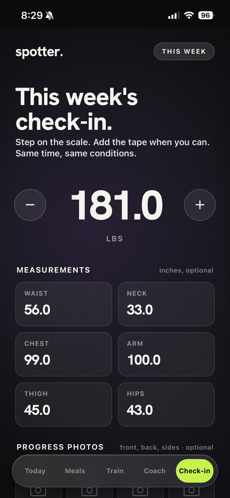

Every other app hands you a graph and wishes you luck. Spotter actually talks. It reads your week, tells you why the scale moved, and tells you what to do about it. I designed the voice before I designed a single screen. That was the whole point.

Logging food is where every diet app goes to die. Nobody wants to weigh a chicken breast. So I made it three taps, tops. Search it, scan it, or take a photo of your plate. Ate out and have no idea? Rough-log it. A wild guess beats a blank day.

The training isn't something I made up in a weekend. It runs on NASM's five-phase OPT model, the real one. You level up as your body's ready, not when an app decides to gamify you. 206 exercises, actual method, no nonsense.

Once a week: step on the scale, grab the tape if you feel like it, take the photos if you're brave. Same time, same conditions, no cheating. Spotter reads the trend and gives it to you straight. The photos show the change, the numbers explain it.

This is where creative direction is going, and I'd rather be early than explain it later. I didn't hand Spotter to a team. I thought it up, named it, branded it, designed every screen, and built the thing. The gap between "designer" and "product" closed while everyone was still arguing about it. That's me, waving from the other side.